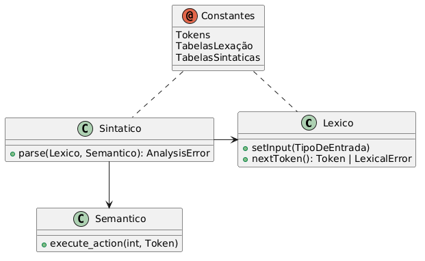

Ações Semânticas e de Geração de Código
Definição dos Aspectos Semânticos
Aspectos Semânticos são definidos atraves da introdução de Ações Semânticas
dentro das produções da especificação sintática. Estas ações são da forma #<número>.
Durante a analise sintática, ação semânticas instruem o analisador sintático a envocar o analisador semântico, passando-lhe como parâmetros o número da ação, e o mais recente token produzido pelo analisador léxico. Cabe ao usuário implementar as ações semânticas, na linguagem de destino.
Estas ações podem ser responsáveis por tarefas de análise semântica (adicionar algum símbolo à tabela de símbolos, checar tipos, verificar se um símbolo ja foi declarado, etc) ou pela geração de código (fazendo-se com que a ação semântica chame o gerador de código).
Foram colocadas na gramática do exemplo a seguir algumas ações. Cabe ao usuário dar sentido a elas, implementando-as.
A ação 2 poderia ser resposável por checar o tipo da expressão e gerar o código para imprimir seu valor.
<C> ::= <IF>
| <WHILE>
| <WRITE>
| begin <C_LIST> end;
<C_LIST> ::= <C> ";" <C_LIST> | î;
<IF> ::= if <E> #1 then <C> <ELSE>;
<ELOSE> ::= else <C> | î;
<WHILE> ::= while <E> #1 do <C>;
<WRITE> ::= write "(" <E> #2 ")";
<E> ::= id #3
| num #4;
Geração de Código e Uso Geral
O código gerado pelo Web GALS é padronizado entre todas as linguagens suportadas e seguem o seguinte formato:

Em geral, o código gira em torno da classe Sintatico, que provêm o mainloop do programa com a função parse(). Esta função
consume tokens da classe Lexico chamando a função nextToken() efetuado ambas analise léxica e sintática.
Quando apropriado, esta função chama execute_action() da classe Semantico.
A implementação da classe Semantico não é provida pelo Web GALS, mas somente seu esqueleto; a implementação vem do usuário.
Segue a implementação de uma função main apropriada para cada linguagem:
Java
import java.io.FileReader;
public class Main
{
public static void main(String[] args)
{
var lex = new Lexico();
var syn = new Sintatico();
var sem = new Semantico();
try (var f = new FileReader("program.txt")) {
lex.setInput(f);
syn.parse(lex, sem);
} catch (Exception e) {
System.out.println(e);
}
}
}
C++
#include <iostream>
#include <fstream>
#include <Lexico.h>
#include <Sintatico.h>
#include <Semantico.h>
int main(void) {
Lexico lex;
Sintatico syn;
Semantico sem;
auto stream = std::ifstream("program.txt");
if (!stream.is_open())
{
std::cerr << "Não foi possível abrir o arquivo." << std::endl;
return 1;
}
lex.setInput(stream);
try
{
syn.parse(&lex, &sem);
}
catch ( AnalysisError& e )
{
std::cerr << e.getMessage() << " @ " << e.getPosition() << std::endl;
}
}
Delphi
lexico : TLexico;
sintatico : TSintatico;
semantico : TSemantico;
//...
lexico := TLexico.create;
sintatico := TSintatico.create;
semantico := TSemantico.create;
//...
lexico.setInput( (* entrada *) );
//...
try
sintatico.parse(lexico, semantico);
except
on e : ELexicalError do
//Trada erros léxicos
on e : ESyntacticError do
//Trada erros sintáticos
on e : ESemanticError do
//Trada erros semânticos
end;
//...
lexico.destroy;
sintatico.destroy;
semantico.destroy;
Python
from Lexico import Lexico
from Sintatico import Sintatico
from Semantico import Semantico
from Errors import AnalysisError
with open('program.txt') as file:
lex = Lexico()
syn = Sintatico()
sem = Semantico()
lex.set_input(file)
try:
syn.parse(lex, sem)
except AnalysisError as e:
print(e)
Rust
use std::{fs::File, io::BufReader};
use crate::{
scanner::Lexico,
parser::Sintatico,
codegen::Semantico
};
mod token;
mod errors;
mod constants;
mod scanner;
mod parser;
mod codegen;
fn main() {
let file = File::open("program.txt").expect("erro ao abrir arquivo");
let lex = Lexico::new(BufReader::new(file));
let sem = Semantico::new();
let syn = Sintatico::new(lex, sem);
if let Err(e) = syn.parse() {
eprintln!("{e}");
}
}Detalhes do código
Dado a semelhança entre as implementações, será somente exemplificado trechos de código em Java. Quaisqueres diferenças podem ser inferidas lendo o código fonte.
Detalhes do analisador Léxico
Um analisador léxico possui os seguintes métodos:
- Construtor
Lexico(): construtor padrão. - Construtor
Lexico(TipoEntrada input): construtor de inicialização. void setInput(TipoEntrada input): Método para passar a entrada ao analisadorvoid setPosition(int pos): Método para indicar a posição a partir da qual o próximo token deve ser procuradoToken nextToken() throws LexicalError: Método chamado para se obter o próximo token da entrada
TipoEntrada refere-se ao tipo específicado na documentação de opções “Modal - Forma de Entrada”.
O método nextToken() é o pricipal desta classe.
A cada chamada o analisador tenta identificar um token a partir da posição atual na entrada. Existem três resultados possíveis:
- Um token é encontrado: Neste caso, é retornado um novo objeto da classe Token.
- A posição de leitura era o fim da entrada: Neste caso é retornado nulo ao chamador, indicando o fim do fluxo de tokens.
- Nenhum token reconhecido: Se nenhum token foi reconhecido pelo analisador, será lançada uma exceção.
A cada chamada com sucesso, um novo token é alocado. Em C++ e Delphi ele deve ser desalocado quando não for mais necessário.
O Token retornado possui três atributos: seu valor numérico (int getId(), seu valor textual (String getLexeme()) e a posição na entrada onde foi encontrado (int getPosition()).
É possível usar a classe Lexico diretamente da seguinte forma:
Lexico lexico = new Lexico();
//...
lexico.setInput( /* entrada */ );
//...
try
{
Token t = null;
while ( (t = lexico.nextToken()) != null )
{
System.out.println(t.getLexeme());
}
}
catch ( LexicalError e )
{
System.err.println(e.getMessage() + "e em " + e.getPosition());
}
| Java | C++ | Delphi | Python | Rust |
|---|---|---|---|---|
Lexico() |
Lexico(void) |
constructor create |
def init(self, input: TipoEntrada = None) |
fn new(lex: Lexico, sem: Semantico<TipoEntrada>) -> Self |
Lexico(TipoEntrada) |
Lexico(TipoEntrada) |
constructor create(input : TStream) |
def init(self, input: TipoEntrada = None) |
N/A |
void setInput(TipoEntrada) |
void setInput(TipoEntrada) |
procedure setInput(input : TStream) |
def set_input(self, input: TipoEntrada) |
N/A |
void setPosition(int) |
void setPosition(int) |
procedure setPosition(pos : integer) |
def set_position(self, pos) |
N/A |
Token nextToken() |
Token* nextToken(void) |
function nextToken : TToken |
def next_token(self) |
fn next_token(&mut self) -> Option<Result<Token, AnalysisError>> |
String getLexeme() |
std::string& getLexeme(void) |
function getLexeme : string |
lexeme: str |
fn get_lexeme(&self) -> &String |
int getPosition() |
int getPosition(void) |
function getPosition : integer |
position: int |
fn get_position(&self) -> usize |
int getId() |
TokenId getId(void) |
function getId : integer |
tkid: TokenId |
fn get_id(&self) -> TokenId |
Note
A função Python
def set_position(self, pos)não existe caso o tipo de entrada seja Stream, e a implementação para Rust não expõe tal função.
Detalhes do analisador Sintatico
O analisador sintático possui apenas um método público (além de seu construtor padrão):
void parse(Lexico scanner, Semantico semanticAnalyser) throws LexicalError, SyntacticError, SemanticError
Para este método é passado um analisador léxico e um semântico. Se nenhum erro for detectado, o método termina de forma normal (o analisador semântico deve ser programado de forma que ele guarde os resultados finais da análise, se houverem).
Este método é o “coração” do processo de análise, e os erros detectados durante esta devem ser tratados pelo chamador deste método. Erros léxicos vem do analisador léxico na forma da exceção LexicalError. Erros semânticos serão reportados via a exceção SemanticError. O próprio analisador sintático detecta erros, e lança a exceção SyntacticError quando os encontra.
| Java | C++ | Delphi | Python | Rust |
|---|---|---|---|---|
void parse(Lexico scanner, Semantico semanticAnalyser) |
void parse(Lexico* scanner, Semantico* semanticAnalyser) |
procedure parse(scanner : TLexico; semanticAnalyser : TSemantico) |
def parse(self, scanner, semantic) | ??? |
Interface com o Analisador Léxico
Sempre que um novo Token for preciso, o método nextToken() do analisador léxico é invocado. É esperado que este método retorne nulo quando não houverem mais Tokens para serem processados, e que lance uma exceção LexicalError quando encontre um erro léxico.
Em C++ e em Delphi, é esperado que a cada chamada o token retornado seja alocado dinâmicamente, pois o mesmo será desalocado posteriormente (via delete/Destroy);
Interface com o Analisador Semântico
Sempre que uma ação semântica for necessária, o analisador semântico será chamado, pelo método executeAction(), que recebe de parâmetro o número da ação atual, e o mais recente token produzido pelo léxico.
É esperado que o analisador semântico lance um SemanticError quando encontrar uma situação de erro semântico.
Detalhes do analisador Semantico
O Analisador Semântico é sempre implementado pelo usuário. Sua interface consiste do método:
void executeAction(int action, Token token) throws SemanticError
Os parâmetros indicam a ação semântica que deve ser executada e o mais recente Token produzido pelo analisador léxico (em c++ ele é passado via ponteiro).
Pode-se implementar de varios modos este método. Para gramáticas com poucas açãoes semânticas, pode-se construir um switch/case em função do parametro action e colocar o código da ação diretamente dentro deste comando, ou delegar um outro método para executá-la (com certeza mais recomendado). Em gramáticas com muitas ações, pode ser mais interessante criar um array de callbacks, indexado pelo número da ação semântica.
Se um erro semântico for detectado, ele deve ser informado ao analisador sintático lançando uma excessão do tipo SemanticError. Isto é importante para manter a uniformidade na detecção de erros.
Detalhes das tabelas de Erro
As exceções geradas pelos analisadores léxico e sintático utilizam como mensagens de erro constates literais declaradas nos arquivos ScannerConstants.java e ParserConstants.java, Constants.cpp, UConstants.pas, Constants.py ou ainda Constants.rs dependendo da linguagem objeto.
São geradas mensagens padrão, mas na maioria dos casos mensagens personalisadas irão identificar melhor os erros para o usuário final da aplicação.
Detalhes das Exceções
As exceções utilizados no GALS possuem dois atributos: uma mensagem de erro e a posição (na entrada) onde o erro aconteceu.
Existem três classes concretas de exceções: LexicalError, SyntacticError e SemanticError,
que são produzidas pelos analisadores léxico, sintático e semântico respectivamente.
Existe ainda uma quarta classe AnalysisError, que serve de base para as outras três.
| Java | C++ | Delphi | Python | Rust |
|---|---|---|---|---|
int getPosition() |
int getPosition(void) |
function getPosition : integer |
position: int |
fn get_position(&self) -> usize |
String toString() |
const char* getMessage(void) |
function getMessage : string |
message: str |
fn get_message(&self) -> String |
O tratamento de erros em Rust é um pouco diferente. Ao invéz de se lançar uma exceção, a função deve retornar o tipo Result<T, E>, onde T é o retorno normal
da função e E é o tipo do erro.
Enquanto nas outras quatro implementações, LexicalError, SyntacticError e SemanticError são subclasses de AnalysisError,
na implementação em Rust existem somente AnalysisError como uma classe concreta, sendo a distinção entre as três variantes feita via uma enumeração.
Em sumo, todas as funções que propagam erro retornam Result<T, AnalysisError>.
Como conveniência, as funções AnalysisError::lexical(), AnalysisError::sintatic() e AnalysisError::semantic() existem para criar
um erro do tipo correspondente.
fn inner() -> Result<(), AnalysisError> {
return Err(AnalysisError::semantic("mensagem".into(), 1));
}
fn outer() -> Result<i32, AnalysisError> {
inner()?; // o operador ? causa o retorno antecipado caso haja erro, similar a uma exceção.
return Ok(1234);
}
fn main() {
let res = match outer() {
Ok(r) => r,
Err(e) => {
match e.get_kind() {
AnalysisErrorKind::Lexical => {...},
AnalysisErrorKind::Syntatic => {...},
AnalysisErrorKind::Semantic => {...},
},
}
};
// ou simplesmente
// let res = outer()?;
}